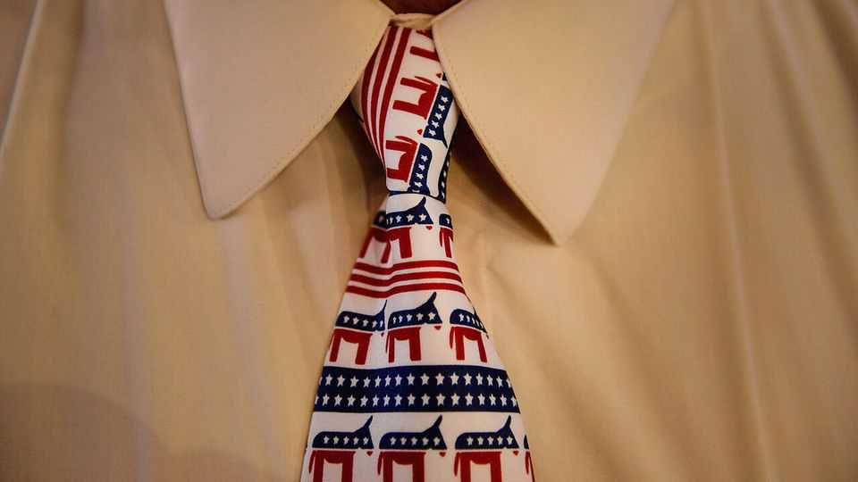

How far left will Democrats go?
Its base is almost as mad at their leaders as they are at the president

Sep 10th 2026
To feel a change underfoot in American politics, go to Texas. Not to the jumbo-rally in Dallas, where this week Donald Trump tried to marshal Republicans ahead of the midterms. Look instead at the other guys: the Democrats, and in particular their 36-year-old state-party chair. Last year Kendall Scudder, a self-described “farm kid from east Texas”, entered a seven-way race for that job and, to everyone’s surprise, won. “The donor class, the consultancy class—everybody had a horse in the race,” he says. He was the grassroots choice, unafraid to give the system a “swift kick in the ass”.
Mr Scudder describes his progressive-populist politics as “us versus the corporates, the billionaires, the bootlickin’ bastards trying to take it away from us”. He has appeared at four events in Texas with Bernie Sanders, a democratic-socialist senator. Party honchos in Washington like Chuck Schumer, the top-ranking Democrat in the Senate, have failed to meet the moment, says Mr Scudder. They are too focused on preserving the status quo.
Many Democrats elsewhere agree. Mr Scudder is not a member of the Democratic Socialists of America (DSA), the group whose rise this summer sent shivers through the party’s remaining centrists. Rather, he represents a bigger phenomenon, of which the DSA is but one expression: a broad desire among Democratic voters for something new. Left-wing insurgents had a banner summer. In Senate primaries in Florida, Maine, Michigan and Minnesota, they beat centrists favoured by the party establishment.
It was far from total domination. Francesca Hong, a DSA candidate for governor in Wisconsin, lost in the Democratic primary in August. But even in defeat, leftists often came close, reinforcing the sense that they are more competitive than ever. That sets up a fierce debate among Democrats that will last well beyond November, shaping their agenda in Congress and the contest for president in 2028.
But first come the midterms. Democrats are poised for a good showing. They will probably take the House and possibly the Senate, too—our model gives them an even chance of that. That would be a remarkable feat, since it would require flipping seats in states that Mr Trump won in 2024, some by double digits. That the Senate is even in play speaks to his acute unpopularity and the tip-top quality of Democratic candidates in places such as Alaska, Iowa and North Carolina. There, savvy moderates are on the ballot. Such is the irony: if Democrats retake the Senate, it will be thanks to moderates. Yet much of the party’s energy resides on its left.
The Democratic Party has long been a big tent. It contains centrists such as Rahm Emanuel, whose CV includes the White Houses of Bill Clinton and Barack Obama, as well as economic populists in the mould of Mr Sanders. Today’s factional struggle is, in many respects, a continuation of the one fought between Hillary Clinton and Mr Sanders in 2016. What’s new is the depth of discontentment in the base, and the way that frustration is finding expression in elections big and small.
The success of the DSA is prime evidence of this. Until recently it was little known outside New York City. It is a discrete entity with its own platform and members. Recognising that standing as a third party would spell certain defeat, it competes on the Democratic Party ballot line and tries to move the party from within.
Amelia Malpas, a PhD candidate in political science at Harvard, tracks insurgent congressmen backed by various left-wing activist groups. Between 2018 and 2024, 20 entered the House (part of a 200-plus Democratic caucus). At least nine more are probably headed there after November in the single biggest influx yet. Five of the incoming crop are members of the DSA.
Leftists are largely succeeding in safe Democratic territory, such as Detroit, New York and Philadelphia. “You won in New York? Great,” says Jaime Harrison, a moderate and former chair of the Democratic National Committee who would rather downplay talk of a progressive insurgency. “It is swing seats that will give us the majority in the House and the Senate.”
Democrats tend to prioritise electability—there are few examples of leftists advancing past primaries and into competitive general elections. Abdul El-Sayed in Michigan’s Senate race is one such candidate—and in the contest with the highest stakes. He calls himself a capitalist but hails from the activist left. His early association with Hasan Piker, a streamer fluent in rage bait, has come back to bite. Another example is William Lawrence in Michigan’s seventh congressional district, which Mr Trump narrowly won in 2024.
Mr Lawrence’s success so far illustrates the anti-establishment mood of the base. In the primary he beat two centrists, including a former Navy SEAL endorsed by Elissa Slotkin, a Democratic senator. Mr Lawrence is a climate activist and tenant organiser who years ago incurred a felony (later expunged) for chaining himself to construction equipment during a pipeline protest. He has called Ms Slotkin a “warmonger” over her support of Israel. Opposition to data centres is the centrepiece of his campaign. Asked how he won his primary, he replies: “People are pissed off.”

Our model gives Dr El-Sayed a 63% probability of winning and puts Mr Lawrence at 60%, in part because Mr Trump’s abysmal ratings are outweighing the usual liabilities that come with ideological extremism in an election. Yet if Dr El-Sayed beats Mike Rogers, his Republican opponent, leftists will consider it proof not of Mr Trump’s unpopularity, but that left-wing populists are viable in swing seats.
Centrists’ biggest worry is that the DSA will taint the party brand. The National Republican Congressional Committee calls Mr Lawrence a “socialist felon”. Republicans have dubbed the incoming DSA congressmen the “commie caucus” and centrist Democrats a “Trojan horse” for socialism. After a DSA member won the Senate primary in Florida, the Democratic candidate for governor there felt obliged to make the rounds on TV declaring: “I reject socialism. I reject the DSA. I’m a capitalist.”
Leftist populists may also make it harder for Democrats to govern next year. Consider the Tea Party, the grassroots insurgency that rocked the Republican establishment and presaged Mr Trump’s rise. In 2010 40 Tea Party candidates won seats in the House. They set about shutting down the government, threatening sovereign-debt defaults and generally making life hell for the Republican speaker of the House. If Democrats win only a narrow majority in Congress, the insurgent left could complicate budget votes by demanding that House leaders eliminate aid for Israel or defund Immigration and Customs Enforcement (ICE). Chris Rabb, a DSA member and likely incoming congressman from Philadelphia, tells The Economist that his priority will be holding any Democratic speaker “to account based on our collective interests and priorities”.
Third Way, a centre-left think-tank, is working to compile embarrassing material on the DSA, part of a $15m plan to discredit it. Jared Moskowitz, a congressman from Florida who fended off a DSA primary challenge, has called the group “anti-American at their core” and questioned whether their lawmakers should get security clearances. Mr Emanuel, a likely presidential contender, wants the DSA to stop competing on the Democratic Party ballot line and thus in Democratic primaries. Or as he said recently: “You want to join us? Get rid of your positions.”
Yet even if Dr El-Sayed were to fail, or the Democratic Party were to neuter the DSA, voters’ dissatisfaction would remain. Three of the incumbents defeated by DSA members this summer were between the ages of 69 and 71; the challengers were either Gen Z or millennials. Democratic voters want generational change, not least because they are furious over Joe Biden’s disastrous bid for re-election. Three in five Democrats say they want new leadership.
Interestingly, surveys show that Democrats express both greater enthusiasm to vote than Republicans and greater dissatisfaction with their own party. “Everybody who’s in charge, just by virtue of being in charge, is a suspicious and discredited figure,” says Phil Gardner, a Democratic strategist. When voters stop trusting party leaders, they stop heeding their endorsements. Mr Schumer’s preferred candidates in the Senate primaries in Maine, Michigan and Minnesota all lost.
There is a broader shift within the Democratic electorate, too, which has become more progressive over the past two decades. Millennials, who came of age during the financial crisis, are carrying their misgivings about capitalism and their progressive social views into their 40s. Since 2010 the share of Democrats who call themselves “liberal” or “very liberal” (which in America is a descriptor of the left) has risen by 15 points, to 55%. Moderates may dislike socialism, but two-thirds of Democrats now say they view socialism positively, up by 16 points. On other issues the party has moved as well. Israel is the galvanising force for the activist left. Two of the successful DSA candidates in this summer’s congressional primaries—Melat Kiros in Denver and Darializa Avila Chevalier in New York—made their names as pro-Palestine activists. Seven in ten Democrats now say they oppose sending economic or military aid to Israel.
Patrick Ruffini, a Republican pollster, points out that some socialist economic ideas are fairly popular, such as raising the minimum wage, capping drug prices and rents, taxing the rich and ensuring universal health care. The trouble is that they are proposed alongside fringe social positions and under the banner of socialism. Populists on the left will struggle with this cultural baggage, particularly in the swing states that pick the president.
This summer’s infighting was but a preview of the turmoil to come in the presidential primary in 2028. That is not a distant battle. Hopefuls will start throwing their hats in the ring as soon as December.
If Democrats win big in the midterms, leftists may conclude that they can let their hair down, says Mr Ruffini. Lessons learned after their defeat in 2024 may be unlearned—namely, that the economy matters most and that left-wing social positions are a dead end in a general election. More than half of Americans say the Democrats are too far left. However the shrewdest DSA politicians are nodding to those lessons. Zohran Mamdani, New York’s mayor, talks nonstop about affordability and renounces his past support for defunding the police. Alexandria Ocasio-Cortez, a congresswoman from New York, now says “Woke 1 was crazy.”
Meanwhile, the challenge for centrists is to channel the anger and big ideas that come so naturally to leftists. Their go-to response throughout the Trump era—a defence of norms and institutions—no longer cuts it with their own voters; moderates will have to articulate a new, disruptive vision even if they do not intend to abolish private health insurance or ICE, says Jesse Lehrich, a Democratic strategist.
Centrist hopefuls are trotting out some bold plans. Pete Buttigieg, the transport secretary under Mr Biden, wants to eliminate the electoral college and expand the Supreme Court. Jon Ossoff, a senator from Georgia, talks compellingly about rooting out government corruption. Gavin Newsom, California’s governor, wants Uncle Sam to get an equity stake in AI firms. Mr Emanuel wants age limits for politicians and social-media bans for children.
Winning requires magnetism, too. Ms Ocasio-Cortez has plenty of it. Whether she runs for president, or whether she instead challenges Mr Schumer for his Senate seat, is among the biggest questions in Democratic politics. Even if she enters the presidential primary and loses, her mere presence may exert a gravitational pull on the rest of the field.
Something similar happened in 2020. After he quit the presidential primary, Mr Sanders formed a “unity task force” with Mr Biden. Their recommendations served as the road map for the next four years and Mr Biden governed as the most economically left-wing president in decades. Many Democrats already sound alike on plenty of economic issues. When it comes to monopoly power, price-gouging, the minimum wage, health-care expansion and taxing billionaires, candidates are all populist to some degree, notes Mr Gardner.
David Sirota, a former speechwriter for Mr Sanders, predicts there will be three kinds of contenders in the 2028 primary: the explicitly anti-DSA candidate, the unapologetic leftist and someone who is left-adjacent and palatable to party bigwigs. If the last of those appropriates populist ideas, it doesn’t matter if they call themselves a moderate, says Mr Sirota. “That is the populist faction winning.” ■
Stay on top of American politics with The US in brief, our daily newsletter with fast analysis of the most important political news, and Checks and Balance, a weekly note that examines the state of American democracy and the issues that matter to voters.